PostgreSQL
Podporuje programovací jazyky:
- Python
- Java
- C/C++
- C#
- Node.js
- Go
- Ruby
- Perl
- Tcl
PostgreSQL podporuje v podstatě všechny funkce, které podporují jiné systémy pro správu databází.
Instalace
Výběr verze produktu
Spustit instalaci
Po dokončení stahování dvakrát klikněte na stažený soubor a spusťte instalaci:
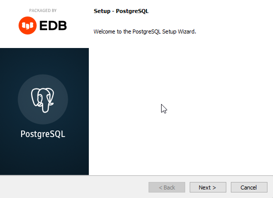
Složka pro instalaci
Můžete zadat umístění PostgreSQL, vybereme prozatím výchozí volbu:
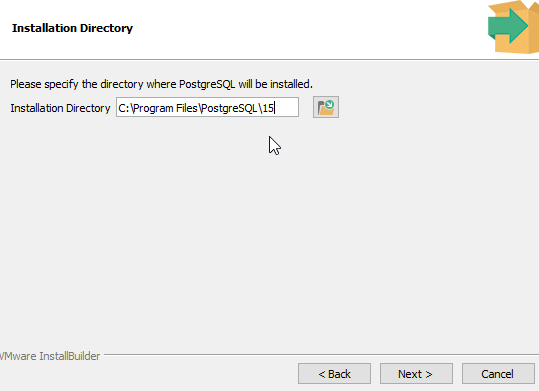
Výběr komponent
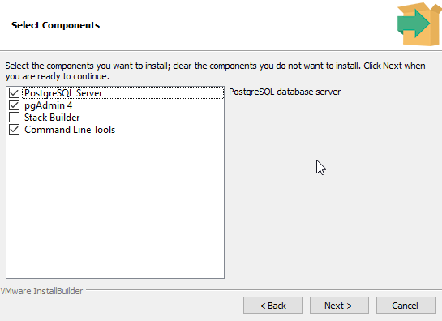
Note
Chcete-li používat PostgreSQL, budete muset nainstalovat PostgreSQL Server.
Doporučuji pgAdmin 4, který poskytuje uživatelské rozhraní a Comand Line Tools pro příkazový řádek.
Složka pro uložení dat databáze
Vyberte kam uložit data databáze, použijeme výchozí volbu:
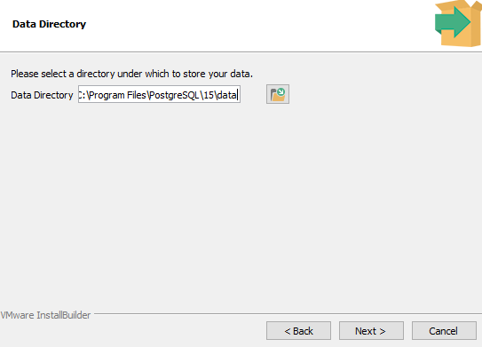
Nastavit heslo
Pro přístup do databáze budete muset zvolit heslo.
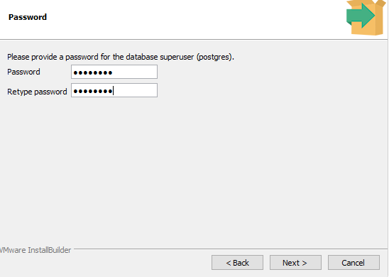
Port k naslouchání
Můžete nastavit port, na kterém má server naslouchat, použijeme výchozí volbu:
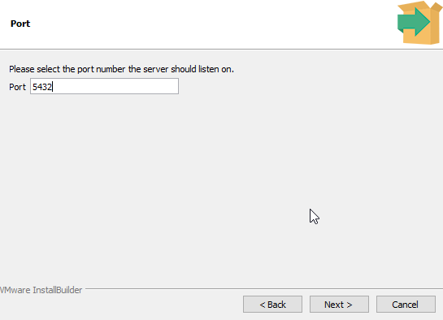
Geografické umístění serveru
Vyberte geografické umístění databázového serveru:
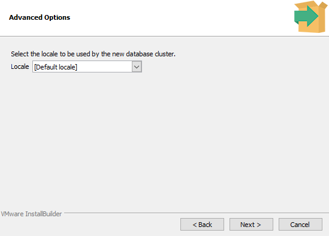
Kontrola před provedením
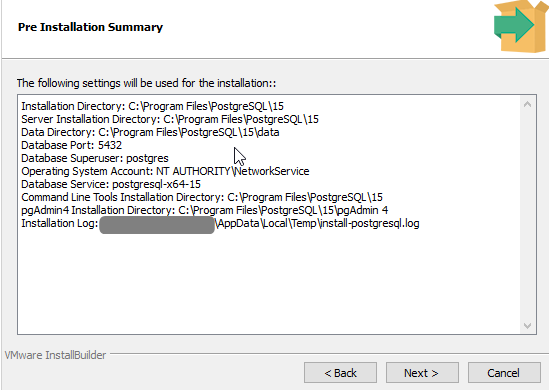
Následně stačí dokončit instalaci
Příkazový řádek
Otestovat zda PostgreSQL naslouchá
Otevřít:
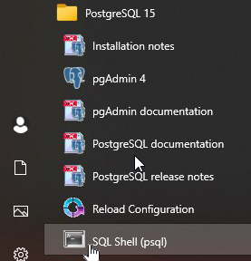
Připojení:
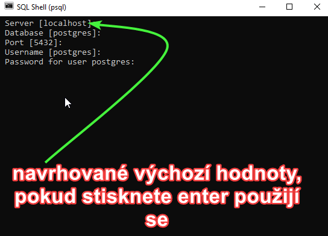
Nyní byste měli dostat výsledek podobný níže:
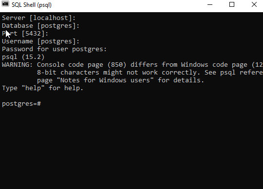
Warning
Pokud nevidíte konzoli v angličtině, musíte udělat tyto změny:
Nastavit v
C:\Program Files\PostgreSQL\16\data\postgresql.conf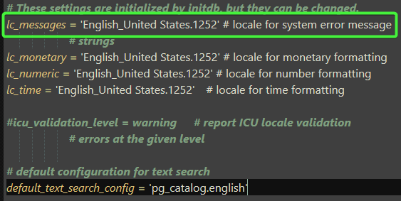
Nastavit v proměnném prostředí
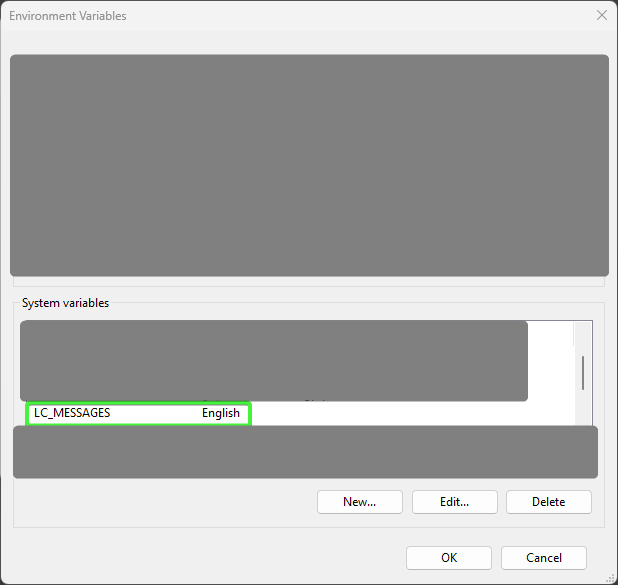
Nyní stačí vypnout a zapnout konzoli a změny by se měli projevit
Pro odzkoušení zda jsme se správně připojili stačí zavolat kód níže:
SELECT version();
Uživatelské rozhraní
Otevřete aplikaci:
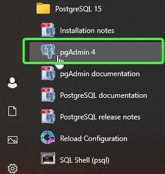